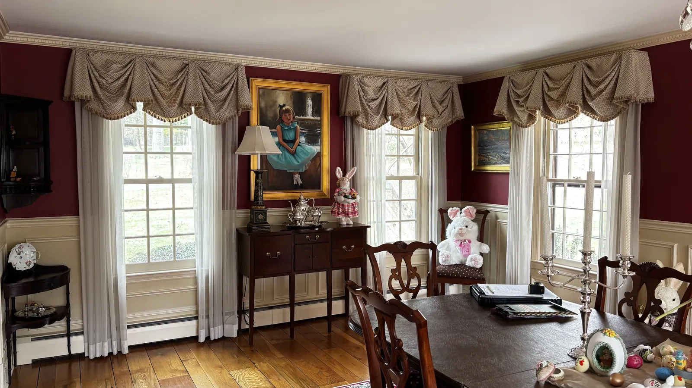
Portfolio
Our work
Every photo here is a job we measured and installed ourselves, across Fairfield County and the shoreline.
Shutters


Drapery & valances


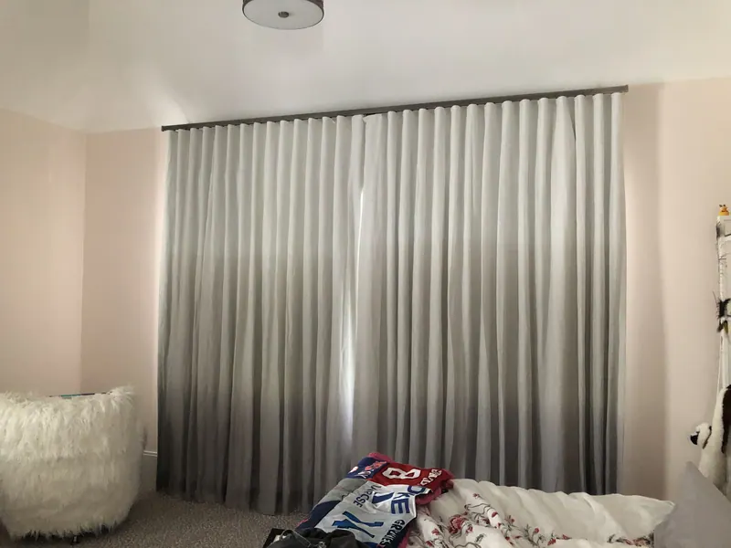
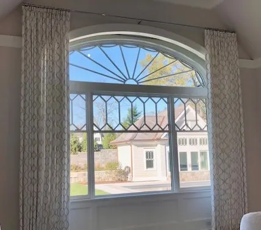

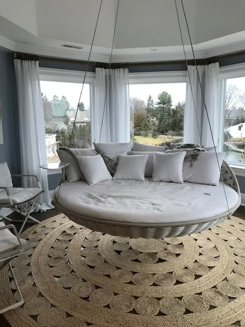

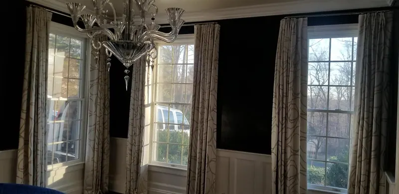
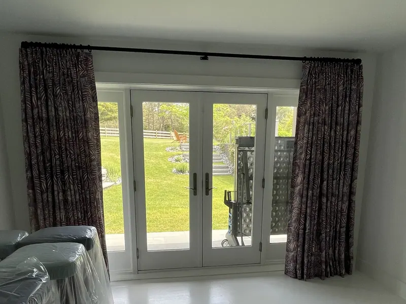
Shades


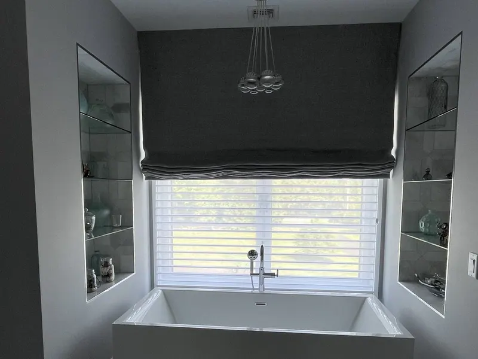
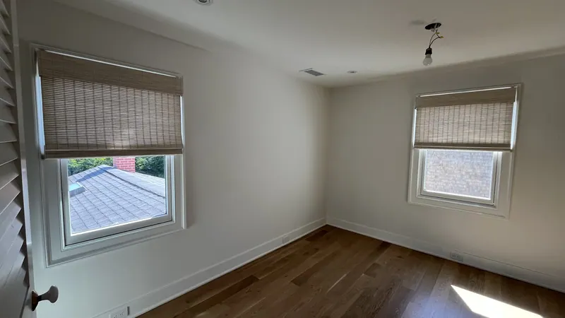

Whole rooms


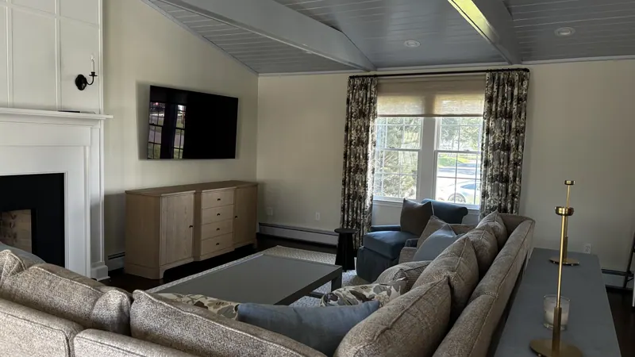

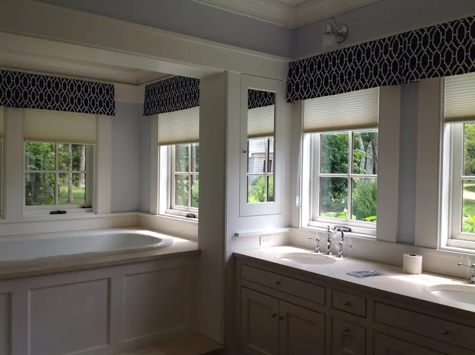
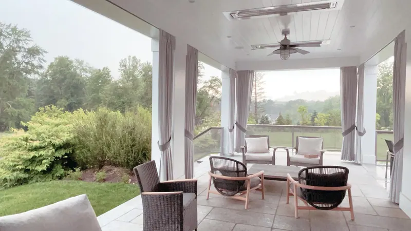
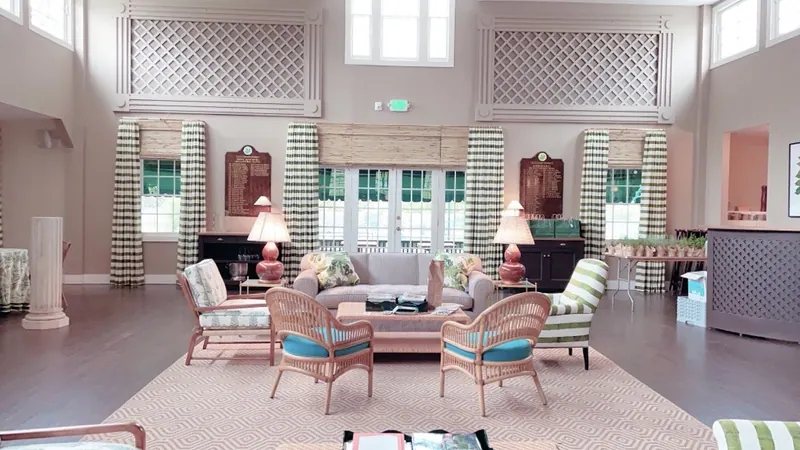
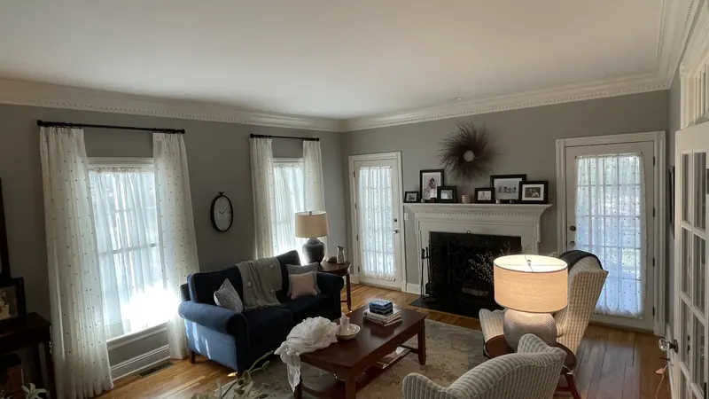
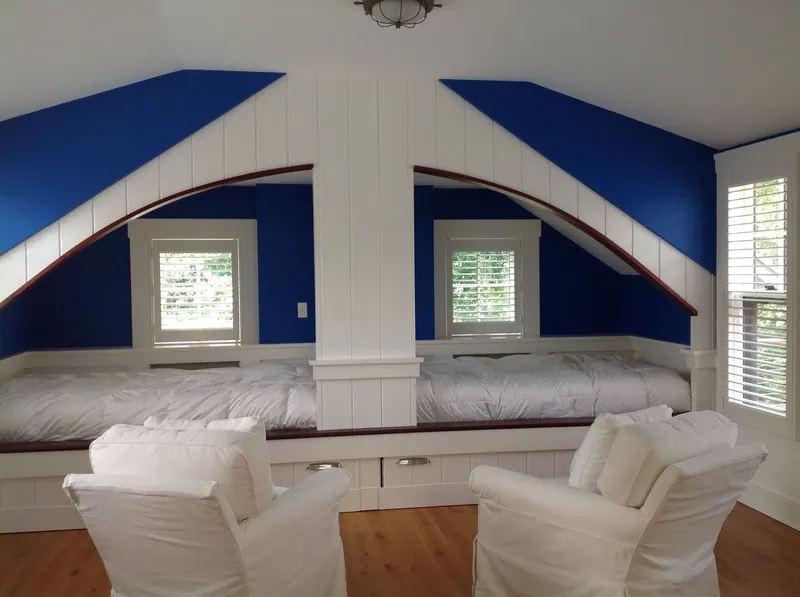
From homeowners we’ve worked with
Had a great experience with Custom Windows & Upholstery. They were extremely knowledgeable and helpful throughout the whole process. The measuring was spot on, the installation was clean and professional, and the shades came out great, as you can see in the photo. Everything fits perfectly and looks exactly how we wanted. Highly recommend them for anyone looking for quality window treatments and knowledgeable, professional service.
I have used this company 3 times… The workers are very polite & well trained for their roles. They called before they came to confirm the time they will be at my house. The owner Janis is very helpful and an "angel". The prices are very reasonable.
Had such a great experience with Custom Windows! Everyone was so helpful and welcoming. Isaac was especially sweet and helpful and made the experience even better. Highly recommend!
Picture this in your home.
A free visit, real samples, and an honest recommendation. No pressure to buy on the spot.